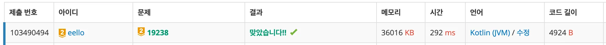

<!DOCTYPE html>
<html lang="ko">
<head>
    <meta charset="UTF-8">
    <meta name="viewport" content="width=device-width, initial-scale=1.0">
    <title>스타트 택시 풀이 - Kotlin - eello blog</title>
    <link rel="stylesheet" href="../style.css">
</head>
<body class="light-mode">
    <header>
        <div class="header-inner">
            <div class="header-left">
                <h1><a href="../index.html">eello blog</a></h1>
            </div>
            <button id="theme-toggle" class="theme-toggle" aria-label="Toggle theme">
                <span class="toggle-track">
                    <span class="toggle-icon sun">
                        <svg xmlns="http://www.w3.org/2000/svg" viewBox="0 0 24 24" fill="none" stroke="currentColor" stroke-width="2" stroke-linecap="round" stroke-linejoin="round"><circle cx="12" cy="12" r="5"></circle><line x1="12" y1="1" x2="12" y2="3"></line><line x1="12" y1="21" x2="12" y2="23"></line><line x1="4.22" y1="4.22" x2="5.64" y2="5.64"></line><line x1="18.36" y1="18.36" x2="19.78" y2="19.78"></line><line x1="1" y1="12" x2="3" y2="12"></line><line x1="21" y1="12" x2="23" y2="12"></line><line x1="4.22" y1="19.78" x2="5.64" y2="18.36"></line><line x1="18.36" y1="5.64" x2="19.78" y2="4.22"></line></svg>
                    </span>
                    <span class="toggle-icon moon">
                        <svg xmlns="http://www.w3.org/2000/svg" viewBox="0 0 24 24" fill="none" stroke="currentColor" stroke-width="2" stroke-linecap="round" stroke-linejoin="round"><path d="M21 12.79A9 9 0 1 1 11.21 3 7 7 0 0 0 21 12.79z"></path></svg>
                    </span>
                    <span class="toggle-thumb"></span>
                </span>
            </button>
        </div>
    </header>
    <div class="container">
        <main>
            <article>
                <h1>스타트 택시 풀이 - Kotlin</h1>
                <div class="article-meta">
                    <span>2026-03-04</span>
                </div>
                <p><a href="https://www.acmicpc.net/problem/19238">문제 링크</a></p>
<h2>조건 정리</h2>
<ul>
<li>활동 영역: NxN (2 &#x3C;= N &#x3C;= 20)
<ul>
<li>각 칸은 빈칸(0) 또는 벽(1)</li>
</ul>
</li>
<li>목표: M명의 승객을 태우는 것 (1 &#x3C;= M &#x3C;= n^2) → 입력으로 주어진 모든 승객을 목적지까지 이동시키는 것</li>
<li>초기 연료: 1 &#x3C;= 초기 연료 &#x3C;= 500,000</li>
<li>택시의 이동: 인접한(상하좌우) 빈칸
<ul>
<li>특정 위치로 이동할 때는 항상 최단거리로 이동</li>
<li>한 칸 이동할 때마다 연료 -1</li>
<li>손님의 목적지에 연료부족 없이 도착했다면 손님의 출발지-목적지 간 사용한 연료 x 2 획득</li>
<li>연료가 부족하면 즉시 운행 종료
<ul>
<li>단, 손님의 목적지에 도착과 동시에 연료가 0인 경우에는 정상적으로 연료 획득 후 운행 진행</li>
</ul>
</li>
</ul>
</li>
<li>손님을 고르는 우선순위
<ol>
<li>최단거리</li>
<li>최단거리인 손님이 여러 명일 경우 행 번호가 낮은 순</li>
<li>이러한 손님이 여러 명일 경우 열 번호가 낮은 순</li>
</ol>
</li>
<li>손님은 모두 출발지가 다름 / 각 손님의 출발지와 목적지가 다름
<ul>
<li>한 손님의 목적지와 다른 손님의 출발지가 같을 수 있음</li>
</ul>
</li>
<li>모든 손님을 목적지까지 데려다준 뒤 남은 연료 출력
<ul>
<li>중간에 연료가 바닥나 모든 손님을 목적지까지 데려다줄 수 없다면 -1</li>
</ul>
</li>
</ul>
<h2>풀이 계획</h2>
<ul>
<li>택시의 이동 순서가 정해져있으므로 단순 시뮬레이션</li>
<li>손님을 태우러가는 경로와 목적지로 가는 경로 모두 BFS로 탐색
<ul>
<li>시작 좌표부터 손님이 존재하는지 확인</li>
<li>BFS 탐색 우선순위: UP, LEFT, RIGHT, DOWN</li>
<li>손님을 찾은 즉시 리턴</li>
</ul>
</li>
<li>활동 영역 지도 재정의
<ul>
<li>빈칸: 0, 벽: -1, 손님: (손님 번호)자연수</li>
</ul>
</li>
</ul>
<h2>풀이</h2>
<h3>계획과 달라진 점</h3>
<ul>
<li>BFS 탐색 우선순위 무의미<br>
계획은 탐색 우선순위에 따라 탐색하며 손님을 찾은 즉시 리턴이었지만 항상 우선순위에 맞게 손님을 찾을 수 있지 않다. 맵이 아래와 같을 때
<pre><code>// 벽: w, 0: 빈칸, t: 택시 시작 위치, 자연수: 손님 탑승 위치
w  w  0  0  0  
1  w  w  w  2  
0  w  0  0  0  
0  0  t  0  0  
0  0  0  0  0
</code></pre>
계획대로 탐색 우선순위를 적용해 찾은 즉시 손님을 리턴하면 2번 손님을 리턴하게 된다. 아래는 t로 시작해 우선순위 순으로 탐색했을 때의 순서이다.
<pre><code>w  w  0  0  0  
16 w  w  w  15  
11 w  1  5  10  
6  2  t  3  8  
12 7  4  9  13
</code></pre>
2번 손님은 15번째, 1번 손님은 그 다음으로 탐색하기 때문에 2번 손님을 태우러 가게된다. 하지만 행 번호가 같다면 열 번호가 적은 손님을 선택해야하는 조건에 따라 1번 손님을 태워야 한다. 때문에 먼저 최초의 최단 거리 손님을 찾은 후 같은 거리에 있에 있는 손님까지 모두 탐색한 후 그 중 행 번호, 열 번호가 더 적은 손님을 선택하도록 구현했다.</li>
<li>손님의 출발지에서 목적지까지의 이동거리는 변함이 없기 때문에 최초 1회 계산해 놓는다.</li>
</ul>
<h3>구현</h3>
<h4>class 손님, 택시</h4>
<pre><code class="hljs language-kotlin"><span class="hljs-keyword">private</span> <span class="hljs-keyword">const</span> <span class="hljs-keyword">val</span> MAX_DISTANCE = <span class="hljs-number">400</span>

<span class="hljs-comment">// 손님 클래스</span>
<span class="hljs-keyword">private</span> <span class="hljs-keyword">data</span> <span class="hljs-keyword">class</span> <span class="hljs-title class_">Passenger</span>(<span class="hljs-keyword">val</span> id: <span class="hljs-built_in">Int</span>, <span class="hljs-keyword">val</span> start: Pos, <span class="hljs-keyword">val</span> destination: Pos, <span class="hljs-keyword">var</span> distance: <span class="hljs-built_in">Int</span> = MAX_DISTANCE)
  
<span class="hljs-comment">// 택시 클래스</span>
<span class="hljs-keyword">private</span> <span class="hljs-keyword">class</span> <span class="hljs-title class_">Taxi</span>(<span class="hljs-keyword">var</span> r: <span class="hljs-built_in">Int</span>, <span class="hljs-keyword">var</span> c: <span class="hljs-built_in">Int</span>, <span class="hljs-keyword">var</span> fuel: <span class="hljs-built_in">Int</span>) {  
  
    <span class="hljs-comment">// 동작 구현</span>
}
</code></pre>
<ul>
<li>MAX_DISTANCE는 N이 최대 20이기 때문에 절대 나올 수 없는 거리인 20x20으로 설정</li>
</ul>
<h4>각 손님의 출발지부터 목적지까지의 거리 미리 계산</h4>
<p>항상 손님은 출발지에서 택시를 타고 목적지까지 이동하기 때문에 출발지부터 목적지까지의 거리는 항상 일정하다. 이 거리를 미리 계산해두면 손님이 택시에 탑승했을 때 택시가 사용할 연료를 매번 계산할 필요가 없다.</p>
<pre><code class="hljs language-kotlin"><span class="hljs-keyword">private</span> <span class="hljs-function"><span class="hljs-keyword">fun</span> <span class="hljs-title">calculateFuelRequired</span><span class="hljs-params">(map: <span class="hljs-type">Array</span>&#x3C;<span class="hljs-type">IntArray</span>>, passengers: <span class="hljs-type">Array</span>&#x3C;<span class="hljs-type">Passenger</span>>)</span></span> {  
    <span class="hljs-keyword">val</span> n = map.size  
    <span class="hljs-keyword">val</span> m = passengers.size  
  
    <span class="hljs-keyword">val</span> que = ArrayDeque&#x3C;Triple&#x3C;<span class="hljs-built_in">Int</span>, Pos, <span class="hljs-built_in">Int</span>>>() <span class="hljs-comment">// 승객번호-1, 현재 위치, 거리  </span>
    <span class="hljs-keyword">val</span> visited = Array(m) { Array(n) { BooleanArray(n) } }  
  
    passengers.forEachIndexed { i, passenger ->  
        with(passenger) {  
            que.add(Triple(i, start, <span class="hljs-number">0</span>))  
            visited[i][start.r][start.c] = <span class="hljs-literal">true</span>  
        }  
    }  
  
    <span class="hljs-keyword">while</span> (que.isNotEmpty()) {  
        <span class="hljs-keyword">val</span> (pi, pos, dist) = que.removeFirst()  
        <span class="hljs-keyword">val</span> passenger = passengers[pi]  
  
        <span class="hljs-keyword">if</span> (passenger.distance &#x3C;= dist) <span class="hljs-keyword">continue</span>  
        <span class="hljs-keyword">if</span> (pos == passenger.destination) {  
            passenger.distance = dist  
            <span class="hljs-keyword">continue</span>  
        }  
  
        <span class="hljs-keyword">for</span> (dir <span class="hljs-keyword">in</span> Direction.entries) {  
            <span class="hljs-keyword">val</span> nr = pos.r + dir.r  
            <span class="hljs-keyword">val</span> nc = pos.c + dir.c  
  
            <span class="hljs-keyword">if</span> (map.isInBounds(nr, nc) &#x26;&#x26; !visited[pi][nr][nc] &#x26;&#x26; map[nr][nc] != -<span class="hljs-number">1</span>) {  
                visited[pi][nr][nc] = <span class="hljs-literal">true</span>  
                que.add(Triple(pi, Pos(nr, nc), dist + <span class="hljs-number">1</span>))  
            }  
        }  
    }  
}
</code></pre>
<h4>택시가 태울 손님 탐색</h4>
<pre><code class="hljs language-kotlin"><span class="hljs-comment">// class Taxi</span>
<span class="hljs-comment">// (다음 승객의 번호, 승객까지의 거리) 리턴, 다음 승객까지 갈 수 없으면 null 리턴  </span>
<span class="hljs-function"><span class="hljs-keyword">fun</span> <span class="hljs-title">searchPassenger</span><span class="hljs-params">(map: <span class="hljs-type">Array</span>&#x3C;<span class="hljs-type">IntArray</span>>)</span></span>: Pair&#x3C;<span class="hljs-built_in">Int</span>, <span class="hljs-built_in">Int</span>>? {  
    <span class="hljs-keyword">val</span> que = ArrayDeque&#x3C;Pair&#x3C;<span class="hljs-built_in">Int</span>, Pos>>().apply { add(<span class="hljs-number">0</span> to Pos(r, c)) } <span class="hljs-comment">// (이동거리, 좌표)  </span>
    <span class="hljs-keyword">val</span> visited = Array(map.size) { BooleanArray(map.size) }.apply { <span class="hljs-keyword">this</span>[r][c] = <span class="hljs-literal">true</span> }  
  
    <span class="hljs-keyword">var</span> passenger: Pair&#x3C;<span class="hljs-built_in">Int</span>, Pos>? = <span class="hljs-literal">null</span> <span class="hljs-comment">// 승객까지의 거리, 승객의 좌표  </span>
    <span class="hljs-keyword">while</span> (que.isNotEmpty()) {  
        <span class="hljs-keyword">val</span> cur = que.removeFirst()  
        <span class="hljs-keyword">val</span> (dist, pos) = cur  
        <span class="hljs-keyword">val</span> (cr, cc) = pos  
  
        <span class="hljs-keyword">if</span> (fuel &#x3C; dist || (passenger != <span class="hljs-literal">null</span> &#x26;&#x26; passenger.first &#x3C; dist))  
            <span class="hljs-keyword">break</span>  
  
        <span class="hljs-keyword">if</span> (map[cr][cc] > <span class="hljs-number">0</span>) {  
            passenger = passenger?.let {  
                <span class="hljs-keyword">return</span><span class="hljs-symbol">@let</span> <span class="hljs-keyword">if</span> (cr &#x3C; it.second.r) cur  
                <span class="hljs-keyword">else</span> <span class="hljs-keyword">if</span> (cr == it.second.r &#x26;&#x26; cc &#x3C; it.second.c) cur  
                <span class="hljs-keyword">else</span> it  
            } ?: cur  
  
            <span class="hljs-keyword">continue</span>  
        }  
  
        <span class="hljs-keyword">for</span> (dir <span class="hljs-keyword">in</span> Direction.entries) {  
            <span class="hljs-keyword">val</span> nr = cr + dir.r  
            <span class="hljs-keyword">val</span> nc = cc + dir.c  
  
            <span class="hljs-keyword">if</span> (map.isInBounds(nr, nc) &#x26;&#x26; !visited[nr][nc] &#x26;&#x26; map[nr][nc] >= <span class="hljs-number">0</span>) {  
                visited[nr][nc] = <span class="hljs-literal">true</span>  
                que.add(dist + <span class="hljs-number">1</span> to Pos(nr, nc))  
            }  
        }  
    }  
  
    <span class="hljs-keyword">return</span> passenger?.let { map[it.second.r][it.second.c] to it.first }  
}
</code></pre>
<p>현재 남은 연료를 사용해 태울 수 있는 손님을 찾는다. 찾은 손님이 있을 때, 해당 손님까지 가는 거리보다 <strong>dist(현재 이동거리)</strong>가 크면 그 뒤로는 항상 최단거리가 아니게 되므로 탐색을 중단하고 해당 손님까지와의 거리가 동일한 거리에 있는 모든 손님까지는 탐색을 진행한다. 이때, 문제의 우선순위에 따라 다음 태울 손님을 결정한다.</p>
<p>[손님의 번호(id), 손님까지의 거리]를 리턴하고 손님을 태우러 갈 때 손님까지의 거리를 이용한다.</p>
<h4>손님 픽업 및 목적지까지 운행</h4>
<pre><code class="hljs language-kotlin"><span class="hljs-function"><span class="hljs-keyword">fun</span> <span class="hljs-title">pickUp</span><span class="hljs-params">(passenger: <span class="hljs-type">Passenger</span>, distance: <span class="hljs-type">Int</span>)</span></span>: <span class="hljs-built_in">Boolean</span> {  
    <span class="hljs-keyword">if</span> (fuel &#x3C; distance) <span class="hljs-keyword">return</span> <span class="hljs-literal">false</span>  
  
    r = passenger.start.r  
    c = passenger.start.c  
    fuel -= distance  
  
    <span class="hljs-keyword">return</span> <span class="hljs-literal">true</span>  
}  
  
<span class="hljs-function"><span class="hljs-keyword">fun</span> <span class="hljs-title">run</span><span class="hljs-params">(passenger: <span class="hljs-type">Passenger</span>)</span></span>: <span class="hljs-built_in">Boolean</span> {  
    <span class="hljs-keyword">return</span> with(passenger) {  
        <span class="hljs-keyword">if</span> (fuel &#x3C; distance) <span class="hljs-literal">false</span>  
        <span class="hljs-keyword">else</span> {  
            r = destination.r  
            c = destination.c  
            fuel += distance  
            <span class="hljs-literal">true</span>  
        }  
    }  
}
</code></pre>
<p><code>searchPassenger()</code> 에서 손님까지의 거리를 함께 리턴한 이유는 <code>pickUp()</code>에서 택시가 이동할 때 사용한 연료를 감소시키기 위함이다.<br>
손님 이동 성공시 사용한 연료의 두 배를 돌려받는데 결국 출발지에서의 남은 연료량에 목적지까지 사용한 연료량을 더한 것과 같기 때문에 <code>run()</code>에서 거리만 더한다.</p>
<ul>
<li><em>fuel = fuel - dist + 2 * dist</em> == <em>fuel += dist</em></li>
</ul>
<h4>손님 탐색 및 목적지까지 이동하는 전체 동작</h4>
<pre><code class="hljs language-kotlin"><span class="hljs-comment">// fun main() 내</span>
<span class="hljs-keyword">var</span> remain = m  
repeat(m) {  
    <span class="hljs-keyword">val</span> pi = taxi.searchPassenger(map)  
    pi?.let {  
        <span class="hljs-keyword">val</span> (pId, dist) = it  
        <span class="hljs-keyword">val</span> passenger = passengers[pId - <span class="hljs-number">1</span>]   
  
        taxi.pickUp(passenger, dist)  
        map[passenger.start.r][passenger.start.c] = <span class="hljs-number">0</span>  
  
        <span class="hljs-keyword">if</span> (!taxi.run(passenger))  
            <span class="hljs-keyword">return</span><span class="hljs-symbol">@repeat</span>  
  
        remain--  
    } ?: <span class="hljs-keyword">return</span><span class="hljs-symbol">@repeat</span>  
}  
  
print(<span class="hljs-keyword">if</span> (remain > <span class="hljs-number">0</span>) -<span class="hljs-number">1</span> <span class="hljs-keyword">else</span> taxi.fuel)
</code></pre>
<p>최단거리 손님 탐색 → 출발지로 픽업 → 목적지까지 이동 순서대로 M번 진행한다. 만약 연료가 부족해 손님을 태우러 갈수 없거나, 목적지까지 이동할 수 없으면 반복(repeat)을 종료한다.</p>
<p>하지만 이렇게만 구현하면 79% 에서 틀린다. 손님의 목적지가 항상 도착할 수 없는 경우를 고려하지 않았기 때문이다. 아래 예를 보면 손님의 목적지는 벽으로 둘러쌓여 있어 절대 이동할 수 없다.</p>
<pre><code>// 벽: w, 0: 빈칸, t: 택시 시작 위치, 1: 손님의 탑승 위치, 2: 손님의 목적지
w  w  0  0  0  
2  w  w  w  0  
w  w  0  0  0  
1  0  t  0  0  
0  0  0  0  0
</code></pre>
<p>위 로직 그대로 실행한다면 택시의 연료만 충분하다면 이동이 가능한 것으로 판단된다. <code>run()</code> 함수 내에서 연료만 충분하다면 택시의 위치를 목적지의 좌표로 바꾸고 연료만 감소시키기 때문이다. 이를 해결하기 위해 <strong>Passenger</strong> 클래스에 읽기 전용 프로퍼티인 <strong>unreachable</strong>를 추가했다.</p>
<pre><code class="hljs language-kotlin"><span class="hljs-keyword">private</span> <span class="hljs-keyword">data</span> <span class="hljs-keyword">class</span> <span class="hljs-title class_">Passenger</span>(<span class="hljs-keyword">val</span> id: <span class="hljs-built_in">Int</span>, <span class="hljs-keyword">val</span> start: Pos, <span class="hljs-keyword">val</span> destination: Pos, <span class="hljs-keyword">var</span> distance: <span class="hljs-built_in">Int</span> = MAX_DISTANCE) {  
    <span class="hljs-keyword">val</span> unreachable <span class="hljs-keyword">get</span>() = distance == MAX_DISTANCE  <span class="hljs-comment">// 추가</span>
}
</code></pre>
<p><strong>Passenger</strong>의 distance 값은 <code>calculateFuelRequired()</code>가 실행될 때 갱신되는데 목적지에 도달할 수 없다면 갱신이 되지 않아 그대로 MAX_DISTANCE 값을 유지한다. 따라서 읽기 전용 프로퍼티 <strong>unreachable</strong>를 이용해 목적지로 절대 이동할 수 없는 경우를 처리할 수 있다.</p>
<pre><code class="hljs language-kotlin">pi?.let {  
    <span class="hljs-keyword">val</span> (pId, dist) = it  
    <span class="hljs-keyword">val</span> passenger = passengers[pId - <span class="hljs-number">1</span>]  
  
    <span class="hljs-keyword">if</span> (passenger.unreachable) <span class="hljs-keyword">return</span><span class="hljs-symbol">@repeat</span>  <span class="hljs-comment">// 추가</span>
  
    taxi.pickUp(passenger, dist)  
    map[passenger.start.r][passenger.start.c] = <span class="hljs-number">0</span>  
  
    <span class="hljs-keyword">if</span> (!taxi.run(passenger))  
        <span class="hljs-keyword">return</span><span class="hljs-symbol">@repeat</span>  
  
    remain--  
}
</code></pre>
<h4>사용한 테스트 케이스</h4>
<pre><code>// 문제의 손님 결정 우선순위에 따라 손님이 결정되는지 테스트
5 2 25  
1 1 0 0 0  
0 1 1 1 0  
0 1 0 0 0  
0 0 0 0 0  
0 0 0 0 0  
4 3  
2 1 3 1  
2 5 3 5  
answer= 16  

// 기본 동작 테스트  
5 1 5  
1 1 0 0 0  
0 1 1 1 0  
0 1 0 0 0  
0 0 0 0 0  
0 0 0 0 0  
4 3  
2 1 3 1  
answer= 2  

// 손님을 픽업할 수 없는 경우 테스트  
5 1 5  
1 1 0 0 0  
0 1 1 1 0  
1 1 0 0 0  
0 0 0 0 0  
0 0 0 0 0  
4 3  
2 1 4 1  
answer= -1  

// 손님을 목적지까지 데려다줄 수 없는 경우 테스트  
5 1 500000  
1 1 0 0 0  
0 1 1 1 0  
1 1 0 0 0  
0 0 0 0 0  
0 0 0 0 0  
4 3  
4 1 2 1  
answer= -1
</code></pre>
<h2>제출 결과</h2>
<p></p>
<h2>전체 코드</h2>
<pre><code class="hljs language-kotlin"><span class="hljs-keyword">import</span> java.util.StringTokenizer  
  
<span class="hljs-keyword">private</span> <span class="hljs-keyword">const</span> <span class="hljs-keyword">val</span> MAX_DISTANCE = <span class="hljs-number">400</span>  
  
<span class="hljs-function"><span class="hljs-keyword">fun</span> <span class="hljs-title">main</span><span class="hljs-params">()</span></span> {  
    <span class="hljs-keyword">var</span> st = StringTokenizer(readln())  
    <span class="hljs-keyword">val</span> n = st.nextToken().toInt()  
    <span class="hljs-keyword">val</span> m = st.nextToken().toInt()  
    <span class="hljs-keyword">val</span> fuel = st.nextToken().toInt()  
  
    <span class="hljs-keyword">val</span> map = Array(n) {  
        st = StringTokenizer(readln())  
        IntArray(n) { -st.nextToken().toInt() }  
    }  
  
    st = StringTokenizer(readln())  
    <span class="hljs-keyword">val</span> tsr = st.nextToken().toInt() - <span class="hljs-number">1</span>  
    <span class="hljs-keyword">val</span> tsc = st.nextToken().toInt() - <span class="hljs-number">1</span>  
  
    <span class="hljs-keyword">val</span> taxi = Taxi(tsr, tsc, fuel)  
  
    <span class="hljs-keyword">val</span> passengers = Array(m) { i ->  
        st = StringTokenizer(readln())  
  
        <span class="hljs-keyword">val</span> id = i + <span class="hljs-number">1</span>  
        <span class="hljs-keyword">val</span> sr = st.nextToken().toInt() - <span class="hljs-number">1</span>  
        <span class="hljs-keyword">val</span> sc = st.nextToken().toInt() - <span class="hljs-number">1</span>  
        <span class="hljs-keyword">val</span> dr = st.nextToken().toInt() - <span class="hljs-number">1</span>  
        <span class="hljs-keyword">val</span> dc = st.nextToken().toInt() - <span class="hljs-number">1</span>  
  
        map[sr][sc] = id  
        Passenger(id, Pos(sr, sc), Pos(dr, dc))  
    }  
  
    calculateFuelRequired(map, passengers)  
  
    <span class="hljs-keyword">var</span> remain = m  
    repeat(m) {  
        <span class="hljs-keyword">val</span> pi = taxi.searchPassenger(map)  
        pi?.let {  
            <span class="hljs-keyword">val</span> (pId, dist) = it  
            <span class="hljs-keyword">val</span> passenger = passengers[pId - <span class="hljs-number">1</span>]  
  
            <span class="hljs-keyword">if</span> (passenger.unreachable) <span class="hljs-keyword">return</span><span class="hljs-symbol">@repeat</span>  
  
            taxi.pickUp(passenger, dist)  
            map[passenger.start.r][passenger.start.c] = <span class="hljs-number">0</span>  
  
            <span class="hljs-keyword">if</span> (!taxi.run(passenger))  
                <span class="hljs-keyword">return</span><span class="hljs-symbol">@repeat</span>  
  
            remain--  
        } ?: <span class="hljs-keyword">return</span><span class="hljs-symbol">@repeat</span>  
    }  
  
    print(<span class="hljs-keyword">if</span> (remain > <span class="hljs-number">0</span>) -<span class="hljs-number">1</span> <span class="hljs-keyword">else</span> taxi.fuel)  
}  
  
<span class="hljs-keyword">private</span> <span class="hljs-function"><span class="hljs-keyword">fun</span> Array<span class="hljs-type">&#x3C;IntArray></span>.<span class="hljs-title">isInBounds</span><span class="hljs-params">(r: <span class="hljs-type">Int</span>, c: <span class="hljs-type">Int</span>)</span></span> = r <span class="hljs-keyword">in</span> indices &#x26;&#x26; c <span class="hljs-keyword">in</span> <span class="hljs-keyword">this</span>[<span class="hljs-number">0</span>].indices  
  
<span class="hljs-keyword">private</span> <span class="hljs-function"><span class="hljs-keyword">fun</span> <span class="hljs-title">calculateFuelRequired</span><span class="hljs-params">(map: <span class="hljs-type">Array</span>&#x3C;<span class="hljs-type">IntArray</span>>, passengers: <span class="hljs-type">Array</span>&#x3C;<span class="hljs-type">Passenger</span>>)</span></span> {  
    <span class="hljs-keyword">val</span> n = map.size  
    <span class="hljs-keyword">val</span> m = passengers.size  
  
    <span class="hljs-keyword">val</span> que = ArrayDeque&#x3C;Triple&#x3C;<span class="hljs-built_in">Int</span>, Pos, <span class="hljs-built_in">Int</span>>>() <span class="hljs-comment">// 승객번호-1, 현재 위치, 거리  </span>
    <span class="hljs-keyword">val</span> visited = Array(m) { Array(n) { BooleanArray(n) } }  
  
    passengers.forEachIndexed { i, passenger ->  
        with(passenger) {  
            que.add(Triple(i, start, <span class="hljs-number">0</span>))  
            visited[i][start.r][start.c] = <span class="hljs-literal">true</span>  
        }  
    }  
  
    <span class="hljs-keyword">while</span> (que.isNotEmpty()) {  
        <span class="hljs-keyword">val</span> (pi, pos, dist) = que.removeFirst()  
        <span class="hljs-keyword">val</span> passenger = passengers[pi]  
  
        <span class="hljs-keyword">if</span> (passenger.distance &#x3C;= dist) <span class="hljs-keyword">continue</span>  
        <span class="hljs-keyword">if</span> (pos == passenger.destination) {  
            passenger.distance = dist  
            <span class="hljs-keyword">continue</span>  
        }  
  
        <span class="hljs-keyword">for</span> (dir <span class="hljs-keyword">in</span> Direction.entries) {  
            <span class="hljs-keyword">val</span> nr = pos.r + dir.r  
            <span class="hljs-keyword">val</span> nc = pos.c + dir.c  
  
            <span class="hljs-keyword">if</span> (map.isInBounds(nr, nc) &#x26;&#x26; !visited[pi][nr][nc] &#x26;&#x26; map[nr][nc] != -<span class="hljs-number">1</span>) {  
                visited[pi][nr][nc] = <span class="hljs-literal">true</span>  
                que.add(Triple(pi, Pos(nr, nc), dist + <span class="hljs-number">1</span>))  
            }  
        }  
    }  
}  
  
<span class="hljs-keyword">private</span> <span class="hljs-keyword">enum</span> <span class="hljs-keyword">class</span> <span class="hljs-title class_">Direction</span>(<span class="hljs-keyword">val</span> r: <span class="hljs-built_in">Int</span>, <span class="hljs-keyword">val</span> c: <span class="hljs-built_in">Int</span>) {  
    UP(-<span class="hljs-number">1</span>, <span class="hljs-number">0</span>), LEFT(<span class="hljs-number">0</span>, -<span class="hljs-number">1</span>), RIGHT(<span class="hljs-number">0</span>, <span class="hljs-number">1</span>), DOWN(<span class="hljs-number">1</span>, <span class="hljs-number">0</span>);  
}  
  
<span class="hljs-keyword">private</span> <span class="hljs-keyword">data</span> <span class="hljs-keyword">class</span> <span class="hljs-title class_">Pos</span>(<span class="hljs-keyword">val</span> r: <span class="hljs-built_in">Int</span>, <span class="hljs-keyword">val</span> c: <span class="hljs-built_in">Int</span>)  
<span class="hljs-keyword">private</span> <span class="hljs-keyword">data</span> <span class="hljs-keyword">class</span> <span class="hljs-title class_">Passenger</span>(<span class="hljs-keyword">val</span> id: <span class="hljs-built_in">Int</span>, <span class="hljs-keyword">val</span> start: Pos, <span class="hljs-keyword">val</span> destination: Pos, <span class="hljs-keyword">var</span> distance: <span class="hljs-built_in">Int</span> = MAX_DISTANCE) {  
    <span class="hljs-keyword">val</span> unreachable <span class="hljs-keyword">get</span>() = distance == MAX_DISTANCE  
}  
  
<span class="hljs-keyword">private</span> <span class="hljs-keyword">class</span> <span class="hljs-title class_">Taxi</span>(<span class="hljs-keyword">var</span> r: <span class="hljs-built_in">Int</span>, <span class="hljs-keyword">var</span> c: <span class="hljs-built_in">Int</span>, <span class="hljs-keyword">var</span> fuel: <span class="hljs-built_in">Int</span>) {  
  
    <span class="hljs-comment">// (다음 승객의 번호, 승객까지의 거리) 리턴, 다음 승객까지 갈 수 없으면 null 리턴  </span>
    <span class="hljs-function"><span class="hljs-keyword">fun</span> <span class="hljs-title">searchPassenger</span><span class="hljs-params">(map: <span class="hljs-type">Array</span>&#x3C;<span class="hljs-type">IntArray</span>>)</span></span>: Pair&#x3C;<span class="hljs-built_in">Int</span>, <span class="hljs-built_in">Int</span>>? {  
        <span class="hljs-keyword">val</span> que = ArrayDeque&#x3C;Pair&#x3C;<span class="hljs-built_in">Int</span>, Pos>>().apply { add(<span class="hljs-number">0</span> to Pos(r, c)) } <span class="hljs-comment">// (이동거리, 좌표)  </span>
        <span class="hljs-keyword">val</span> visited = Array(map.size) { BooleanArray(map.size) }.apply { <span class="hljs-keyword">this</span>[r][c] = <span class="hljs-literal">true</span> }  
  
        <span class="hljs-keyword">var</span> passenger: Pair&#x3C;<span class="hljs-built_in">Int</span>, Pos>? = <span class="hljs-literal">null</span> <span class="hljs-comment">// 승객까지의 거리, 승객의 좌표  </span>
        <span class="hljs-keyword">while</span> (que.isNotEmpty()) {  
            <span class="hljs-keyword">val</span> cur = que.removeFirst()  
            <span class="hljs-keyword">val</span> (dist, pos) = cur  
            <span class="hljs-keyword">val</span> (cr, cc) = pos  
  
            <span class="hljs-keyword">if</span> (fuel &#x3C; dist || (passenger != <span class="hljs-literal">null</span> &#x26;&#x26; passenger.first &#x3C; dist))  
                <span class="hljs-keyword">break</span>  
  
            <span class="hljs-keyword">if</span> (map[cr][cc] > <span class="hljs-number">0</span>) {  
                passenger = passenger?.let {  
                    <span class="hljs-keyword">return</span><span class="hljs-symbol">@let</span> <span class="hljs-keyword">if</span> (cr &#x3C; it.second.r) cur  
                    <span class="hljs-keyword">else</span> <span class="hljs-keyword">if</span> (cr == it.second.r &#x26;&#x26; cc &#x3C; it.second.c) cur  
                    <span class="hljs-keyword">else</span> it  
                } ?: cur  
  
                <span class="hljs-keyword">continue</span>  
            }  
  
            <span class="hljs-keyword">for</span> (dir <span class="hljs-keyword">in</span> Direction.entries) {  
                <span class="hljs-keyword">val</span> nr = cr + dir.r  
                <span class="hljs-keyword">val</span> nc = cc + dir.c  
  
                <span class="hljs-keyword">if</span> (map.isInBounds(nr, nc) &#x26;&#x26; !visited[nr][nc] &#x26;&#x26; map[nr][nc] >= <span class="hljs-number">0</span>) {  
                    visited[nr][nc] = <span class="hljs-literal">true</span>  
                    que.add(dist + <span class="hljs-number">1</span> to Pos(nr, nc))  
                }  
            }  
        }  
  
        <span class="hljs-keyword">return</span> passenger?.let { map[it.second.r][it.second.c] to it.first }  
    }  
  
    <span class="hljs-function"><span class="hljs-keyword">fun</span> <span class="hljs-title">pickUp</span><span class="hljs-params">(passenger: <span class="hljs-type">Passenger</span>, distance: <span class="hljs-type">Int</span>)</span></span>: <span class="hljs-built_in">Boolean</span> {  
        <span class="hljs-keyword">if</span> (fuel &#x3C; distance) <span class="hljs-keyword">return</span> <span class="hljs-literal">false</span>  
  
        r = passenger.start.r  
        c = passenger.start.c  
        fuel -= distance  
  
        <span class="hljs-keyword">return</span> <span class="hljs-literal">true</span>  
    }  
  
    <span class="hljs-function"><span class="hljs-keyword">fun</span> <span class="hljs-title">run</span><span class="hljs-params">(passenger: <span class="hljs-type">Passenger</span>)</span></span>: <span class="hljs-built_in">Boolean</span> {  
        <span class="hljs-keyword">return</span> with(passenger) {  
            <span class="hljs-keyword">if</span> (fuel &#x3C; distance) <span class="hljs-literal">false</span>  
            <span class="hljs-keyword">else</span> {  
                r = destination.r  
                c = destination.c  
                fuel += distance  
                <span class="hljs-literal">true</span>  
            }  
        }  
    }  
}
</code></pre>
            </article>
        </main>
    </div>
    <script>
        const themeToggle = document.getElementById('theme-toggle');
        const body = document.body;
        
        // 1. Check localStorage
        const savedTheme = localStorage.getItem('theme');
        if (savedTheme) {
            body.className = savedTheme;
        } else {
            // 2. Check system preference
            if (window.matchMedia && window.matchMedia('(prefers-color-scheme: dark)').matches) {
                body.className = 'dark-mode';
            } else {
                body.className = 'light-mode';
            }
        }

        themeToggle.addEventListener('click', () => {
            if (body.classList.contains('light-mode')) {
                body.classList.replace('light-mode', 'dark-mode');
                localStorage.setItem('theme', 'dark-mode');
            } else {
                body.classList.replace('dark-mode', 'light-mode');
                localStorage.setItem('theme', 'light-mode');
            }
        });
    </script>
</body>
</html>